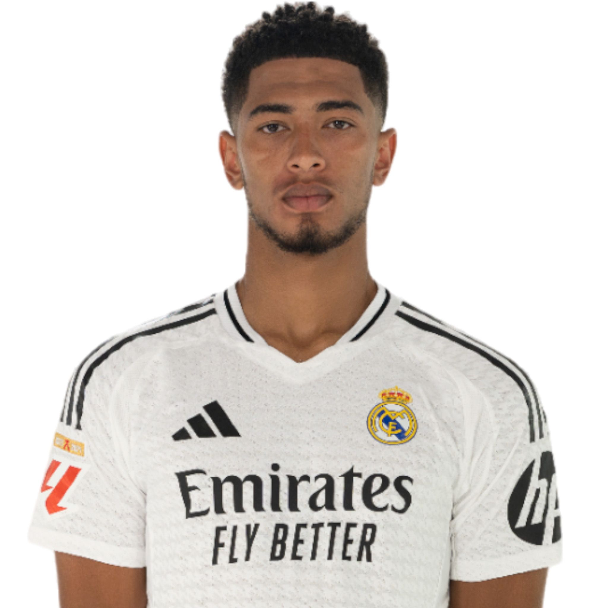
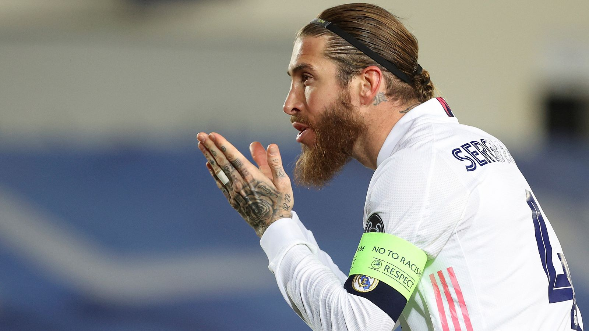

Últimas noticias del Real Madrid
Descubre las últimas noticias y eventos relacionados con el Real Madrid. ¡Mantente al día con lo más importante de tu club favorito!
Victoria histórica en la Champions League

El Real Madrid se lleva una victoria épica en la final de la Champions League, venciendo a su eterno rival por 3-1. Los goles de Benzema y Vinícius Junior fueron cruciales para la victoria.
Nuevo fichaje estrella: Jude Bellingham
El Real Madrid ha confirmado la llegada de Jude Bellingham, una de las promesas más brillantes del fútbol mundial. El joven inglés se une a las filas del club para reforzar el centro del campo.
El regreso de Sergio Ramos
Tras su paso por el PSG, Sergio Ramos regresa a su casa, el Real Madrid, para continuar su carrera en la élite del fútbol europeo. Los aficionados celebran su retorno.
Conoce a nuestros equipos
Fútbol Masculino
El equipo de fútbol masculino sigue siendo uno de los más competitivos en Europa, luchando por los títulos más importantes del fútbol mundial.

Fútbol Femenino
El equipo de fútbol femenino ha crecido enormemente en los últimos años, destacándose en la liga española y en competiciones internacionales.
Suscríbete a nuestro Podcast
Suscríbete a nuestro Podcast en:
O si prefieres, descarga nuestro archivo OPML para suscribirte a todos nuestros podcasts:
Descargar OPML